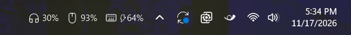
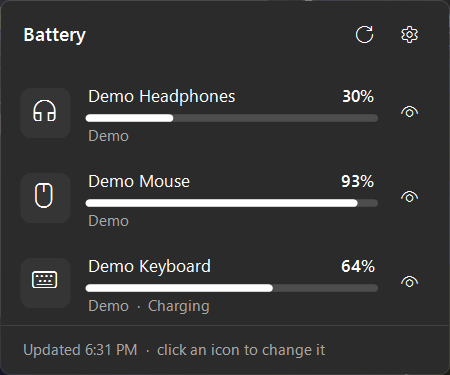

Battery Bar
Your wireless headphones, mouse and keyboard battery, right on the Windows taskbar.

Windows 10 and 11 · 240 KB · no admin rights · no internet · free and open source
Install
- Download
BatteryBar.exeand run it. - If Windows says "Windows protected your PC", click More info then Run anyway. (The exe is not code-signed; the source is public.)
- Click Yes to install. It starts with Windows and gets a Start menu entry.
- Turn your devices on. Their battery shows up left of the tray icons within a minute.

Click the numbers to open the panel: battery bars for every device, show/hide each one, click an icon to change it, and a gear for settings. Right-click for Refresh and Exit.
Works with
| Devices | Notes |
|---|---|
| Logitech mice, keyboards, headsets | Through G HUB if it is running, otherwise directly (Lightspeed, Unifying, Bolt, USB, Bluetooth) |
| Razer mice and keyboards | Directly, Synapse not needed |
| Razer HyperSpeed headsets | BlackShark V2 Pro and similar |
| Any Bluetooth headphones, earbuds, mice, keyboards, controllers | Anything Windows shows a battery for in Bluetooth & devices |
Missing yours? Open the panel, click the gear, then Copy diagnostics and paste it into a GitHub issue.
Uninstall
Open the panel, click the gear, then Uninstall. Everything is removed.